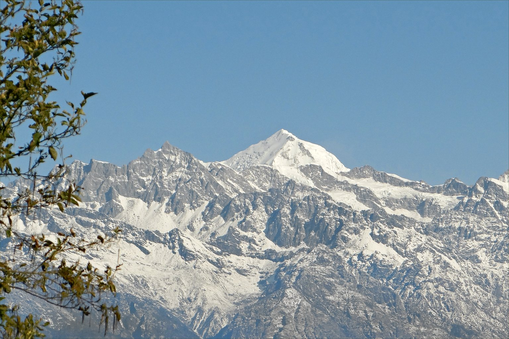
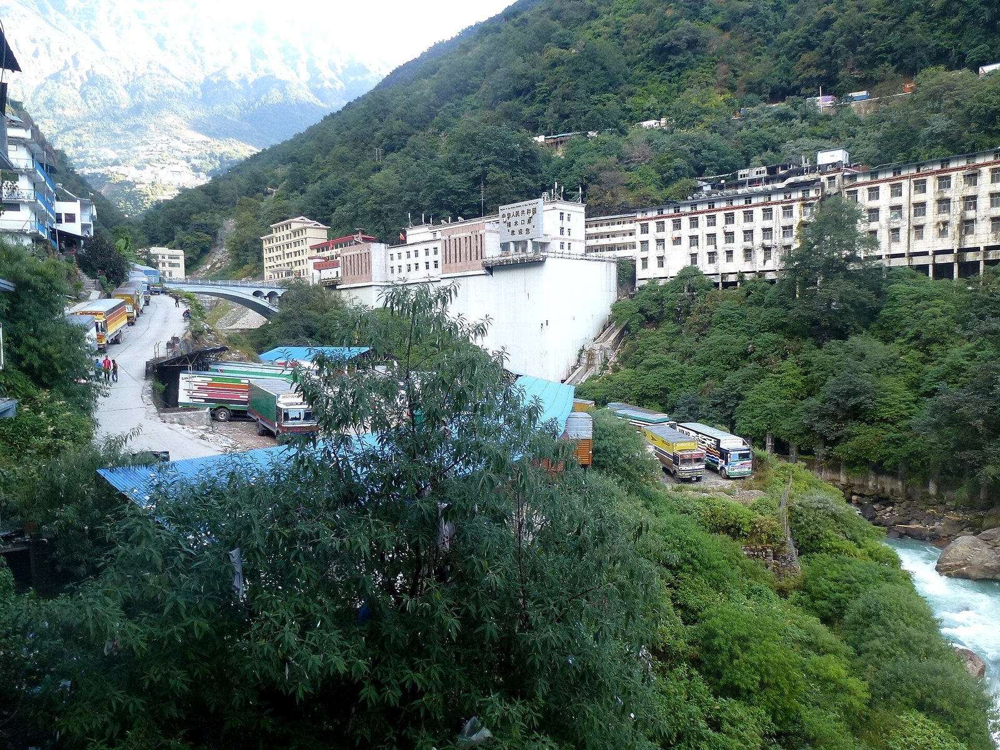
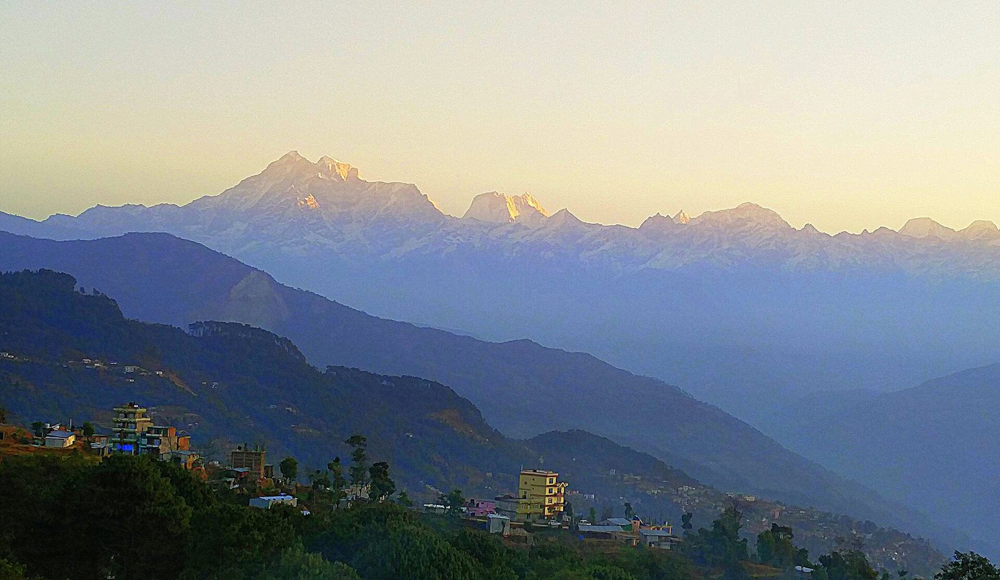
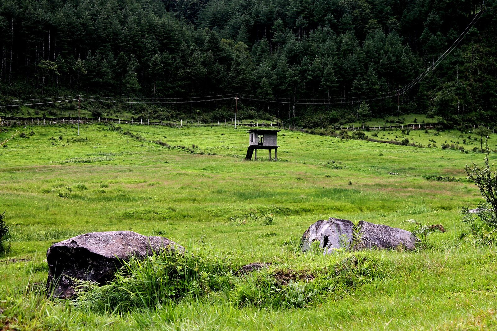
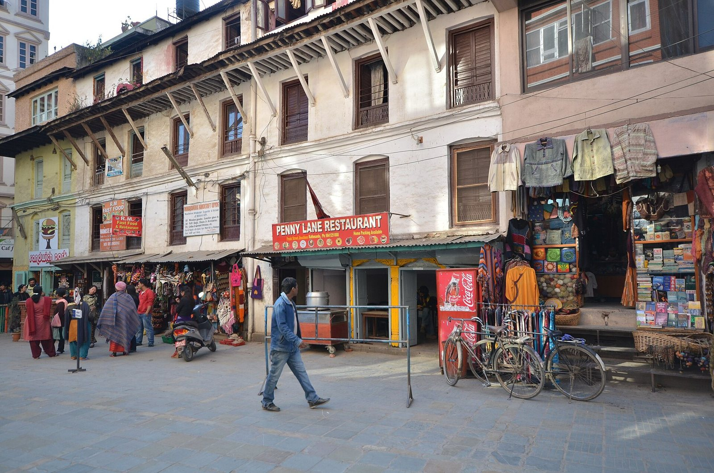
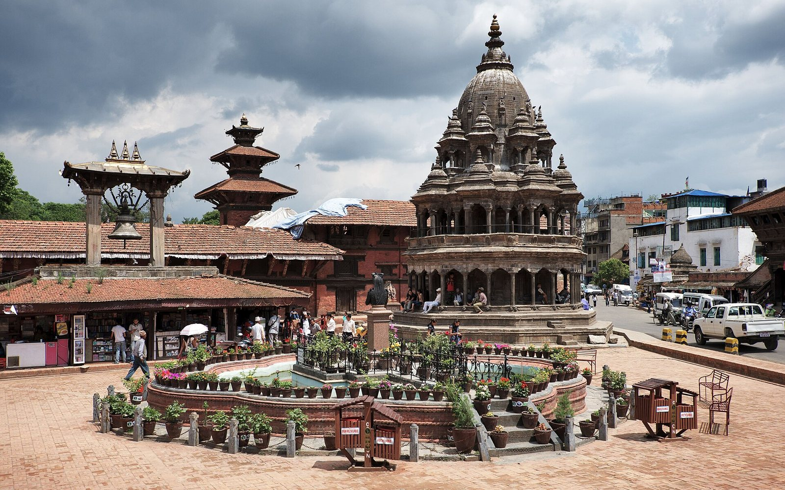

Chapitre 4 · 18 – 29 novembre 2011
La virée à moto
Cinq jours sur les routes de l'est, jusqu'à la frontière tibétaine et Jiri, puis Katmandou une dernière fois
À l'Everest, nous avions un guide et des lodges ; au Dhaulagiri, plus de guide ni de porteur. Pour finir, nous retirons un filet de plus : deux motos louées à Thamel, sans papiers ni assurance, contre un passeport laissé en caution. Je n'ai jamais conduit de moto, et je n'ai pas de permis. Cinq jours durant, nous roulons vers l'est, jusqu'à la frontière du Tibet puis jusqu'à Jiri, et quatre soirs de suite nous plantons la tente là où le paysage nous retient. Puis vient Katmandou une dernière fois, une ville devenue un peu la nôtre, et le départ.
Katmandou18 novembre 2011
Notre quartier préféré
Pokhara → Katmandou en bus, puis Freak Street
- bus pour Katmandou, départ 7 h 30
- hôtel près de Freak Street · chambre avec salle de bain, 350 Rps

Le 18 novembre, nous quittons Pokhara, après six jours passés à flâner, puis à nous remettre d'une intoxication alimentaire. Le lever, à 5 h 30, est un peu difficile. Les sacs sont prêts ; au point du jour, nous traversons à pied les rues encore tranquilles jusqu'à la gare routière. Places réservées, bus à l'heure : tout se passe bien. Je prends des biscuits pour la route, et à 7 h 30 nous partons. Le trajet se fait sans histoire.
Je lis Annapurna, premier 8000, acheté la veille à Pokhara, et j'y retrouve l'ambiance du tour du Dhaulagiri, puis celle du sanctuaire. Il me semble qu'à peu de chose près, nous avons marché sur les traces de la première expédition française à l'Annapurna, en 1950. Les Français de 1950 ont en effet commencé par chercher une voie sur le Dhaulagiri, depuis Tukuche, dans la vallée de la Kali Gandaki ; c'est ensuite par une autre vallée, celle de la Miristi Khola, qu'ils ont gagné l'Annapurna, dont Maurice Herzog et Louis Lachenal ont atteint le sommet le 3 juin 1950. Le livre a paru l'année suivante. Dehors, il pleut. Une fois de plus, nous avons la chance d'être à l'abri dans un bus pendant que le ciel se vide.
Le bus nous dépose dans un quartier de Katmandou que nous ne connaissons pas ; nous retrouvons sans peine Freak Street, notre quartier préféré. L'hôtel bon marché est plus difficile à trouver. Nous finissons par prendre, à 350 roupies la nuit, une chambre propre avec salle de bain : un luxe que nous ne nous sommes offert qu'une fois au Népal, le tout premier jour.
Nos habitudes reviennent vite : flâner, à l'affût de beignets et de plats népalais que nous ne connaissons pas encore. Un délicieux beignet de lentilles et de légumes coûte deux roupies ; plus loin, nous en trouvons à une roupie. Et très vite, nez à nez avec Juan, l'ami espagnol rencontré à Sinuwa neuf jours plus tôt. La surprise est bonne ; nous parlons un long moment. Il me donne de l'Ultralevura pour finir de me remettre, et nous nous promettons de dîner ensemble quand il rentrera de son prochain trek, dans le Langtang. Nous, nous tenons à notre idée d'un voyage à moto : demain, nous irons nous renseigner sur la location.
Le soir, un dal bhat délicieux dans la cantine juste en face de l'hôtel, pour 60 roupies, et nous nous couchons vite, fatigués. Nous passerons deux nuits dans cet hôtel près de Freak Street.
Katmandou19 novembre 2011
Trois gestes à connaître
Freak Street → Thamel, puis un premier tour de nuit
- Hero Honda 125 cm³ et Pulsar · 400 Rps par jour et par moto
- motos récupérées à 17 h · premier tour, de nuit
- même hôtel près de Freak Street
La nuit a été bonne, le réveil aussi. Nous partons chercher pour le petit déjeuner un milk tea et une sucrerie. C'est samedi, notre dimanche, et la rue s'éveille à peine. Ce seront des beignets, assis devant un milk tea : trop de beignets, trop d'huile. Nous voilà lourds. Au Népal, le samedi est le jour de repos de la semaine.
Puis nous partons pour Thamel, où se concentrent les loueurs de motos. Au terme d'une étude de marché approfondie, nous choisissons une Hero Honda de 125 cm³ et une Pulsar, à 400 roupies par jour et par moto. Il faudra revenir les chercher à 17 heures.
Nous sommes surexcités, et parfaitement inconscients. Je n'ai aucune idée de la façon dont on conduit une moto, ni dont on en tient le poids : je n'en ai jamais conduit, et je n'ai pas le permis. J'ai, en fait, la photocopie de celui d'un ami de Romain, qui par chance me ressemble un peu. J'espère vivement que nous ne serons pas contrôlés.
L'après-midi est douce, le beau temps revient. Romain et moi commandons chacun un jean taillé sur mesure, pour 1 100 roupies, qui devrait nous attendre au retour. Puis je craque pour un costume, sur mesure lui aussi, dans une belle toile gris anthracite. Pourvu qu'il soit bien coupé, et de bonne qualité.
17 heures : le moment tant attendu, et tant redouté. Au magasin, on ne nous demande, en échange des deux motos, qu'un passeport original. Les motos n'ont ni papiers ni assurance. Rien d'autre qu'un passeport : notre identité. Je donne le mien ; ainsi, en cas de contrôle de police, je n'aurai pas à justifier de mon identité. À partir de cet instant, je m'appelle Alban, et il me reste à apprendre mon nom de famille et ma date de naissance.
Le loueur, pressé de reprendre le fil de sa vie, pose les deux motos dans la rue et nous montre les trois manipulations à connaître. Nous voilà seuls avec ces deux lourds engins, au beau milieu de Thamel, le plus gros quartier touristique de la ville. La circulation est dense ; nous poussons les motos à la main jusqu'à une rue étroite, reculée, isolée. C'est là que nous apprenons à conduire. Un coup de kick, l'embrayage, la première ; un coup d'accélérateur de la main droite en relâchant doucement l'embrayage de la main gauche. La moto avance par à-coups, et j'arrive maladroitement au fond de la ruelle. Je recommence, pour que le geste devienne naturel : je vais devoir le répéter mille fois dans les jours qui viennent. En roulant au pas, les deux jambes juste au-dessus du sol, je sais que je suis incapable du moindre réflexe de freinage. Il faut pourtant l'apprendre, et vite, avec tous les gestes qui font marcher une moto : au Népal, la circulation est chaotique. J'ai peur. J'oubliais : il fait nuit.
La moto de Romain est déjà en panne : le kick ne répond plus, elle cale. Un coup de téléphone, et on nous l'échange contre une Pulsar dernier cri, plus effrayante aussi. Nous faisons tous les deux quelques allers-retours. Au bout de dix minutes, il faut se lancer sur la route : nous n'avons pas le choix, les réservoirs sont presque vides, il faut trouver une station-service. Je suis très réticent. La nuit, la circulation, les klaxons, et sur la chaussée un mélange de voitures, de motos, de vélos, de pousse-pousse, de piétons et de chiens. C'est effrayant, mais c'est parti. Je pars devant : connaissant Romain, j'ai peur de le perdre.

… extrêmement concentré, et bien conscient du danger. Jusque-là, nous nous débrouillons vraiment bien. Les rues s'élargissent, la circulation grossit ; il y a du monde partout, dans un désordre indescriptible. Ce désordre nous aide, au fond : il nous oblige à rester vigilants et très lents, et dans un tel chaos un mauvais conducteur passe inaperçu. Les pompes à essence sont rares au Népal ; il faut interroger plusieurs personnes, et une demi-heure, pour en trouver une. Le plein fait, nous reprenons la direction de l'hôtel. Autour de Ratna Park, le désordre est hallucinant. Je finis par suivre Romain, qui s'oriente mieux que moi : je ne pense qu'à ma conduite. Peu à peu, je prends l'engin en main, et j'arrive à Freak Street infiniment heureux. Quelle expérience.
Je n'ose pas en parler à mes parents. Inconscience, ou danger mesuré ? Je ne sais pas. Mais je suis heureux de savoir conduire une moto, en plein Katmandou, et de nuit. « Ne fais pas le malin Clément ! » Il me reste « six jours à vivre et à gérer comme ces deux dernières heures ». Un dîner, un passage rapide sur internet. Demain, à nous la route, à nous l'est du Népal : nous partirons à 6 heures pour éviter la circulation, tranquilles et libres comme l'air. Deuxième nuit à l'hôtel près de Freak Street.
Moto, jour 120 novembre 2011
La plage de sable blanc
Katmandou → Bhaktapur → col de Nagarkot → Dowa Pati → la grand-route → au bord de la rivière
- départ 6 h · 9 h de moto, entre 30 et 40 km/h
- 1er bivouac, sur une plage de sable blanc au bord de la rivière


Ce soir, la fatigue me donne peu envie d'écrire, et pourtant la journée mérite d'être racontée. Ce matin, nous nous levons à 6 heures et partons aussitôt. Les rues de Katmandou sont calmes, nous trouvons sans mal la sortie. Les réflexes appris la veille, encore bien jeunes, reviennent doucement. Je cale tout de même au milieu d'une grande rue de Ratna Park, que je m'apprêtais à prendre à contresens. Heureusement, il y a peu de monde.
Nous rejoignons la route principale de Bhaktapur. Peu de routes goudronnées relient les villes entre elles, et celles qui existent sont très fréquentées. Calés sur la gauche, puisqu'au Népal on roule à gauche, nous avançons doucement et régulièrement, entre 30 et 40 km/h. Premier arrêt un peu en dessous de Bhaktapur, pour un petit déjeuner de deux bananes, de biscuits et de milk tea. Nos mains sont glacées par la fraîcheur du matin, mais la journée s'annonce splendide, et le soleil se découvre vite. Bhaktapur est, avec Katmandou et Patan, l'une des trois anciennes cités royales de la vallée, inscrites ensemble au patrimoine mondial de l'Unesco en 1979.
Vingt kilomètres de montée nous mènent au col de Nagarkot, d'où l'on voit le centre de la chaîne himalayenne. La montée est très agréable, le soleil perce à travers les arbres, il fait doux : cela me rappelle les cols des Alpes. C'est magnifique, et moins fatigant pour les jambes. Ma concentration, en revanche, est au maximum, au point d'en avoir mal à la tête. Nagarkot est perché vers 2 200 mètres sur le rebord est de la vallée de Katmandou ; par temps clair, la vue y embrasse une grande partie de la chaîne, jusqu'à l'Everest.

_(8448200379).jpg){kind=link}
Ensuite, nous prenons une route secondaire, par Dowa Pati. Le chemin, de terre et de pierres brutes, est casse-gueule et tourne vite à la piste de VTT : nous glissons dans la boue, nous calons dans les côtes. Mais il traverse aussi des passages plats, au milieu des rizières, et le paysage est très beau.
À midi, après déjà cinq heures de moto, une pause bien méritée : pour un euro à deux, un gros chowmein chacun, un thé et un dessert. Le rêve.
Nous repartons vers l'est, en direction de Jiri, en évitant désormais les pistes. Il faut, à regret, rejoindre la grand-route ; elle se révèle très belle, authentique, et de bonne qualité, tout est relatif. Ma concentration baisse un peu, et je revois à la baisse nos ambitions pour la journée. Je prends de l'aisance, je manie de mieux en mieux les vitesses, les freins, les dépassements, en restant extrêmement vigilant. Heureusement, on conduit lentement au Népal, comparé à l'Europe : j'ai le temps de réfléchir et d'anticiper.
Nous traversons la vallée de Katmandou par des lacets sans nombre, qui montent et qui descendent : c'est très beau, et très fatigant.
Après neuf heures de moto en tout, et quelque quatre-vingt-dix kilomètres, nous nous arrêtons près d'un fleuve que nous suivons depuis longtemps et qui nous attire. La lumière est extraordinaire, le cadre sublime. Les versants mêlent la jungle et les rizières. Au bord des routes sèchent des pousses de riz et poussent des bananiers ; des écoliers partout, et des poules, des chèvres, des vaches qui traversent sans prévenir. Une journée pleine de belles images, et de rencontres amusantes à chaque pause. La police et l'armée sont très présentes, mais ne semblent guère s'intéresser aux touristes, c'est-à-dire à nous : nous n'en avons croisé aucun autre sur la route.
Nous avons trouvé un coin paradisiaque : un petit bout de sable fin et blanc, à cinquante centimètres de l'eau. C'est notre premier camping sauvage.
La nuit dernière, à l'hôtel, Romain est tombé malade : vomissements et diarrhée. Je commençais à le croire immunisé contre les intoxications. Ce soir, il est remis, et il n'a rien changé à nos plans. Chapeau. Nous retrouvons les joies du camping et nos sacs de couchage. Je suis exténué ; il me faut cette nuit pour digérer tout ce que j'ai appris aujourd'hui. Demain, nous remonterons la vallée jusqu'à la frontière du Tibet.
Moto, jour 221 novembre 2011
La ligne au sol
Bord de la rivière → Barabise → Kodari, frontière tibétaine → retour → crête de pins sur la route de Jiri
- départ vers 8 h 30 – 9 h · à la frontière pour le déjeuner
- bivouac sur une crête de pins


Le 21, sur notre plage, nous nous réveillons dans une humidité complète. Des gouttes nous tombent régulièrement sur le visage : la vallée est noyée dans un brouillard épais, et l'arbre qui nous abrite nous déverse la rosée du matin. Le cadre reste beau, et nous prenons le temps du petit déjeuner : tsampa de blé au miel, muesli et thé. Un délice.
Vers 8 h 30 ou 9 heures, nous reprenons les motos, et la route du Tibet. Elle remonte un fleuve puissant jusqu'à la frontière chinoise. Il fait beau, et la route est bonne jusqu'à Barabise. C'est l'Araniko, la route construite dans les années 1960 avec l'aide de la Chine sur une ancienne piste de yaks, cent douze kilomètres de Katmandou à Kodari. Peu avant Barabise, elle quitte la Sun Koshi pour remonter son affluent, la Bhote Koshi, qui ne devient frontière qu'au dernier pont. Ensuite, comme l'annonçait la carte, le goudron alterne avec une piste de terre défoncée, boueuse par endroits, très pierreuse ailleurs. Nous traversons des cours d'eau, l'œil sur les bus qui roulent « à l'arrache ».


À l'heure du déjeuner, nous arrivons à la frontière, à Kodari. La ville est en effervescence, posée tant bien que mal le long d'une route éventrée. Les marchandises s'entassent sur les bas-côtés, la file des camions s'allonge. Nous garons les motos et avançons timidement vers la frontière. Au loin se dessine une grande ville étagée en terrasses, à l'architecture tibétaine. C'est Zhangmu, que les Népalais appellent Khasa, la première ville du Tibet, de l'autre côté du pont de l'Amitié. En avril 2015, le séisme du Gorkha fermera ce passage.
Passé deux lignes de gardes, nous arrivons à la frontière elle-même : une ligne tracée au sol, gardée par deux soldats chinois. Photos interdites. Nous faisons demi-tour, heureux d'avoir atteint notre objectif.
Cinq minutes de moto plus loin, nous déjeunons sur un point de vue, face à une grande cascade, côté chinois. Je commence sérieusement à prendre la moto en main, sans cesser d'être attentif à tout.

Nous redescendons jusqu'à notre point de départ du matin, et prenons la route de Jiri. Après trois quarts d'heure d'une montée abrupte en lacets, nous guettons un endroit pour la nuit. Un chemin mène à une crête plantée de pins. Le soleil commence à se coucher, la lumière est belle, nous sommes fatigués : nous y établissons notre camp. Très bonne décision. La route de Jiri quitte l'Araniko près de Lamosangu et grimpe dans les collines du district de Dolakha, par Charikot, son chef-lieu.
La vue sur la vallée est magnifique, l'endroit très accueillant ; sa végétation nous rappelle celle du Morgonnet, la petite montagne qui domine notre maison de famille, au-dessus du lac de Serre-Ponçon. En dix minutes, la tente est montée, et nous nous installons confortablement pour regarder le soleil se coucher. La journée s'est très bien passée ; nous sommes contents. La nuit tombée, allongés dans la tente, nous voyons le ciel étoilé.
Moto, jour 322 novembre 2011
La terrasse de mousse
Crête de pins → les lacets de la route de Jiri → une terrasse cachée de la route
- course à pied à l'aube · déjeuner à 11 h
- bivouac caché sur une terrasse de mousse et d'herbe


Le 22, quand j'ouvre un œil sur la crête, le jour se lève. La cime des arbres se dessine sur un ciel encore bleu pâle ; au loin, une légère teinte orangée. Il ne fait pas froid, l'air est sec. Si je me lève, autant aller courir : tout m'y invite, et depuis notre arrivée au Népal je n'ai pas couru une seule fois. Je tends le bras vers mon sac, en tire un caleçon et un tee-shirt ; deux minutes plus tard, je suis dehors. Il doit être entre 5 h 30 et 6 heures. C'est magique : je vais courir.
Un chemin de terre court à flanc de montagne. La pente, par chance, reste douce, et la vue est imprenable sur la vallée et, au loin, sur la chaîne de l'Himalaya, où se lève le soleil. Les sommets sont orangés. C'est extraordinaire. Sous mes pieds, je sens que mes semelles sont usées. Au bout d'une demi-heure, je rentre retrouver Romain, qui se lève. Petit déjeuner tranquille dans la tente : je retrouve les sensations d'un matin de course à pied à Bruxelles. Quand les premiers rayons du soleil touchent la toile, nous rangeons le camp et nous préparons à partir.


La route est difficile. Nous prenons de l'altitude par une multitude de lacets serrés, et les bus nous arrivent droit dessus, à toute allure. Ils ont tous les droits et prennent toute la place ; à chaque fois, nous nous jetons sur le bas-côté pour ne pas être fauchés. Deux paquets de biscuits engloutis sur une terrasse, dans un beau village d'altitude, n'y font rien : la faim avance le déjeuner à 11 heures. La route est très belle et longe de larges flancs de montagne ; nous ouvrons de grands yeux devant le paysage : des collines boisées à perte de vue, et au fond la chaîne de l'Himalaya. Nous déjeunons de nouilles et de semoule sur une terrasse verte au bord de la route, sous un soleil si fort que nous finissons torse nu.
Ensuite, la route s'améliore. Nous croisons un troupeau de cochons, et roulons souvent sur du millet que les jeunes étalent sur la chaussée pour en récupérer les grains. Après un plein d'essence dans un village, nous trouvons un bon endroit pour la nuit. D'après certains, la route n'est pas sûre, à cause des voleurs et des bandits : nous cachons les motos comme nous pouvons, et nous nous installons sur une terrasse de mousse et d'herbe, invisible depuis la route. Une fois encore, le paysage est grandiose, et le coucher de soleil très beau. Le bois est sec ; nous faisons un feu, pour dîner et nous réchauffer.
« Le feu s'éteignant, nous remarquons le ciel étoilé qui vient nous rappeler que nous sommes infiniment petits !! »
Nous nous couchons, et le silence nous entoure. Seuls les cris d'un cerf, d'après Romain, viennent le troubler. Demain, nous pousserons jusqu'à Jiri.
Moto, jour 423 novembre 2011
Jiri, puis la crête
Terrasse de mousse → Jiri → retour à la crête de pins
- à Jiri à 11 h
- froid et humide au réveil
- bivouac sur la crête de pins, comme l'avant-veille


Encore une grosse et belle journée. Le 23, sur la terrasse de mousse, nous ouvrons les yeux au lever du jour. Il fait froid et humide, mais le ciel est entièrement dégagé. Nos sacs de couchage sont trempés, et nous attendons le soleil avec impatience ; en attendant, petit déjeuner : une grosse tsampa, du muesli et du thé. Nous avons eu froid cette nuit, et le thé nous réchauffe.
Dès les premiers rayons sur la tente, nous rangeons tranquillement le camp : s'habiller au soleil est bien plus agréable. Puis nous tirons les motos de leur cachette, approximative, de la veille, et prenons la route. À l'ombre, elle est glaciale ; au soleil, délicieuse. Elle est très belle : toujours les mêmes lacets, à flanc de montagne et parfois sur la crête. Mais le gravier et le sable qui la couvrent nous ralentissent. À 11 heures, nous atteignons Jiri, notre objectif. La ville est belle et paisible, le temps magnifique. Jiri, vers 1 900 mètres, est surnommée la porte de l'Everest : c'est d'ici que partent à pied vers le Khumbu ceux qui ne prennent pas, comme nous en octobre, l'avion de Lukla.


Une pause, trois paquets de biscuits, et nous repartons vers la crête de pins où nous avons dormi avant-hier.
Le retour descend plus souvent qu'il ne monte. Tout roule ; nous sommes à l'aise sur nos motos. Ma vieille bécane peine dans les côtes, et Romain, sur sa moto neuve, me devance largement. La lumière est belle, je profite pleinement du paysage. Déjeuner sur une parcelle de millet, au soleil. En y chargeant mon sac, je fais tomber ma moto : un clignotant cassé. L'armée nous arrête, pour enregistrer notre passage : un simple point d'entrée et de sortie, rien de plus. Les bus sont toujours aussi brutaux, et nous toujours prêts à nous jeter dans les pierres du bas-côté.
Nous n'avons plus de lentilles : nous achetons notre dîner dans un beau petit village d'altitude, face à la chaîne de l'Himalaya. Au coucher du soleil, nous retrouvons la crête de pins, un endroit idéal, parce que très peu humide le matin. Encore une grosse journée de conduite : une centaine de kilomètres.
Pour l'apéritif, des chips népalaises, pas bonnes celles-là ; puis le dîner sous la tente, avec un beau ciel étoilé.
« Nous sommes en totale liberté et en découverte perpétuelle. »
Ce soir, je pense terminer mon livre. Quelle histoire incroyable. Demain, nous rentrons à Katmandou.
Moto, jour 524 novembre 2011
Retour dans le chaos de Katmandou
Crête de pins → la grand-route → Patan → Katmandou
- jusqu'à 80 km/h sur la grand-route
- Trekker's Paradise, Freak Street · une chambre simple pour deux


J'ai attrapé un rhume, et je retrouve la sensation désagréable des jours d'avant le départ pour le Népal. La faute aux changements de température sur la moto, et à la grosse humidité froide de la nuit dernière. Un Doliprane dans la nuit, et je peux me rendormir.
Le réveil, le 24, est magique : la nature, les pins, notre crête. Au fond, le soleil se lève sur les sommets de l'Himalaya, et la brume emplit la vallée. C'était notre dernière nuit de camping sauvage. Petit déjeuner très agréable, d'œufs et de biscuits.
Puis les motos, et la route de Katmandou. Les derniers lacets de montagne, et nous retrouvons la route principale, qui mène tout droit à la capitale. Quel contraste avec la route de Jiri : un bon revêtement, assez de largeur pour deux camions. Très à l'aise, nous nous permettons de prendre de la vitesse, jusqu'à 80 km/h. À l'approche de Katmandou, la circulation se densifie. Doubler les bus, les camions et les motos n'a rien de simple : ma moto manque terriblement de reprise.
Nous entrons dans la vallée par Patan, que nous traversons rapidement. Aux abords de Katmandou, nous naviguons dans une masse indescriptible de motos, de piétons, de bus, de scooters. Les motos déboulent de partout, les piétons traversent n'importe quand ; c'est hallucinant, si peu d'organisation. Les files ne se comptent plus, et pas un feu de signalisation : seulement des policiers, débordés par le nombre.
Trouver où déjeuner est difficile ; nous finissons sur une petite terrasse au soleil, assis sur des bambous posés là. Puis un enfer de klaxons et de circulation jusque chez le loueur, qui refuse de nous rembourser le surplus d'essence. Bien décidés à ne pas perdre cet argent, nous arpentons la rue à la recherche d'un acheteur pour nos huit litres. À force de demander aux voyageurs et aux passants, nous trouvons un taxi intéressé : nous remplissons son réservoir, contre 600 roupies. Contents de l'affaire, nous mangeons des momos dans notre cantine tibétaine ; Romain garde un goût d'essence dans la bouche.
Nos jeans sur mesure sont prêts, et la coupe nous plaît beaucoup. Autour d'un milk tea, nous commandons chacun trois autres pièces. Nous rentrons à l'hôtel avec l'impression d'être habillés comme des princes, et l'heureuse sensation retrouvée de porter un jean. Je m'achète un sac duffel noir North Face qui me fait envie depuis un mois : pratique, solide, il servira. Reste une mission, et pas une mince affaire : rapporter des cadeaux. Nous en parlons beaucoup. Nous trouverons.
Le soir, dîner au restaurant de naans, délicieux. Nous faisons la connaissance d'un couple de Français très sympathiques, et je passe un moment en ligne avec des proches et mes parents. Bien chouette. Nous logeons désormais au Trekker's Paradise, un vrai paradis : bonne ambiance, et une grande chambre pour une personne, moins chère ; Romain se propose de dormir par terre. Puis une promenade de nuit dans Freak Street et sur Durbar Square, au frais, dans des rues plus calmes. Quel bonheur de retrouver notre ville. Nous n'en aurons bientôt plus l'occasion.


J-425 novembre 2011
Une rue par métier
Katmandou : le quartier des vêtements, les tailleurs
- Trekker's Paradise, Freak Street
Le 25, le petit déjeuner est incroyable : du yaourt frais, déjà sucré, trouvé dans la rue de bon matin, avec des wheat flakes et une pâtisserie. Délicieux. Puis nous découvrons encore un nouveau quartier de Katmandou, celui des vêtements : de petites ruelles enfouies sous des tonnes d'habits de mauvaise qualité. Très impressionnant. Chaque rue a sa spécialité : les épices, le thé, la peinture, l'artisanat, les vêtements, l'informatique, les montres, les tailleurs, la viande, le poisson. C'est amusant. Toute la matinée, nous repérons les cadeaux à offrir, au retour comme à Noël : tâche aisée. Nous en achetons aussi quelques-uns pour nous.
Mais je ne digère plus, et je retrouve la désagréable sensation de Pokhara : fatigué, sans faim. Au déjeuner, je prends de la « poudre magique », et nous reprenons nos affaires. Je vais chercher mon costume ; il me plaît bien. Pourvu qu'il me plaise encore à Bruxelles. J'en commande un second, noir et classique cette fois.
Et nous trouvons enfin l'idée du siècle pour Mamie et Grand-Père : une pierre sculptée au nom de leur chalet de Prunières. Le soir, dîner somptueux, et pourtant bon marché, dans notre restaurant de naans préféré : alu matar, riz nature et alu naan. Nous dormons au Trekker's Paradise, où nous resterons jusqu'au départ.
J-326 novembre 2011
La liste
Katmandou : cadeaux et marchandages
- toujours beau, mais plus frais
- Trekker's Paradise, Freak Street
Le 26, encore un délicieux petit déjeuner : le même yaourt, les mêmes wheat flakes, une grosse tsampa pour moi, des œufs pour Romain. La poudre d'hier semble avoir agi ; j'espère mieux digérer aujourd'hui. Nous dressons une longue liste de tout ce qu'il reste à faire dans les jours qui restent. D'abord, une douche : depuis plus d'une semaine, nous n'avons pas eu d'eau autrement que pour boire et manger, et la moto nous a couverts de poussière. Ne crions pas victoire : la douche est absurde, seul le robinet d'eau chaude fonctionne, et l'eau est trop chaude. Le comble. Tant bien que mal, nous redevenons propres.
La journée passe à marchander et à chercher des idées de cadeaux pour tout le monde, en surveillant le poids et la place qui restent dans nos sacs. Toujours le beau fixe, mais plus frais. Déjeuner et dîner au restaurant des naans : un régal. Les rencontres continuent. Kumar, le vendeur de plaids, nous raconte ses affaires avec le Japon et les États-Unis. Un groupe de Français, accros à Freak Street, s'y est installé depuis un mois, au Moon Stay, notre lodge du retour de l'Everest.
L'ambiance est détendue, et nous commençons à sentir que ces sorties sont peut-être nos dernières à Katmandou avant longtemps.

Nuit au Trekker's Paradise.
J-227 novembre 2011
Patan, à la lampe de poche
Katmandou → Patan, retour à pied à la nuit tombée
- retour à pied, de nuit, pendant la coupure de courant
- Trekker's Paradise, Freak Street
Dans la nuit, un mal de ventre me fait lever ; rien de grave. Comme d'habitude, petit déjeuner pantagruélique, granola en plus ce matin. Forts de cette bonne dose d'énergie, nous décidons d'aller à Patan, la ville voisine que nous avons traversée en vitesse au retour de la moto. Seule une large rivière la sépare de Katmandou. C'est la Bagmati, la rivière sacrée de la vallée ; Patan s'appelle aussi Lalitpur.

.jpg){kind=link}
D'abord, un tailleur, pour des chemises. Romain a déjà son tissu, orange, et trouve facilement un tailleur. J'ai plus de mal à trouver un tissu à mon goût, puis je tombe sur un tailleur sympathique qui propose à peu près ce que je cherche. J'espère que Simon, mon petit frère, sera du même avis que moi : je peux raisonnablement supposer qu'il a mes mesures. Nous complétons notre collection de plaids en laine de yak, puis prenons enfin la direction de Patan. La route est longue, mais elle nous fait découvrir de nouveaux quartiers, et beaucoup de magasins de chaussures, où nous ne trouvons pas ce que nous cherchons.
Patan est une belle ville, avec un grand Durbar Square et de nombreux palais. La lumière est belle, les briques rouges, le bois des maisons joliment sculpté. La place royale a été bâtie pour l'essentiel au XVIIe siècle par les rois Malla ; elle est inscrite au patrimoine mondial de l'Unesco depuis 1979, avec le reste de la vallée.
Sur la place principale, où se tient un meeting politique sur la démocratie, nous rencontrons par hasard un couple d'Auvergnats. Le pays cherche alors sa constitution : élue en 2008, l'Assemblée constituante doit la rédiger ; elle sera dissoute en mai 2012 sans y être parvenue. Nous finissons la journée ensemble, et rentrons tous les quatre à pied à Katmandou.
La nuit est tombée, et la ville vit la coupure d'électricité habituelle du soir. Les marchés se tiennent à la lampe de poche ; les phares des voitures et des motos éclairent les trottoirs où nous marchons. L'ambiance est bonne. À cette époque, faute de production suffisante, le courant est coupé chaque jour pendant des heures, surtout en saison sèche ; ces délestages ne cesseront dans les grandes villes qu'en 2017.
Retour à l'hôtel, puis dîner : riz frit, quatre chapatis et un curry, un yaourt crémeux. Il fait frais, malgré la belle journée. Peu à peu, le Népal entre dans l'hiver.
J-128 novembre 2011
La dernière journée
Katmandou : dernières courses, couturiers, soirée avec Juan
- Trekker's Paradise, Freak Street · dernière nuit
Le 28, notre dernière journée pleine, nous nous levons particulièrement tôt, sans aucune raison, et allons comme d'habitude acheter le petit déjeuner dans les échoppes de notre rue. Puis nous partons avec la liste des dernières courses avant le grand départ : quelques plaids de plus, des bonnets pour les amis oubliés, des épices. Et nos pantalons. Après hésitation, nous décidons de les essayer. Heureusement : trop longs pour Romain, trop larges pour moi. Nous expliquons les retouches, et le couturier peut les faire tout de suite. Nous attendons donc dans sa minuscule boutique, assis sur des tabourets, en sirotant les thés qu'on nous fait apporter.
Sous ce calme apparent, nous sommes inquiets : trois autres commandes sont en cours, et nous avons rendez-vous avec Juan, recroisé sur Freak Street plus tôt dans l'après-midi. Le couturier manie nos pantalons avec habileté ; en une heure, il en a retouché cinq.
Nous courons chercher mon costume, mais le distributeur ne nous donne plus d'argent, et le costume n'est pas prêt. Au couturier, qui ne parle pas trois mots d'anglais, j'arrive à peu près à expliquer que je repasserai demain matin, mais que je veux tout de même vérifier la largeur du pantalon. Elle est bonne. Plus le temps d'aller chercher la pierre sculptée pour Prunières. Romain court chercher sa chemise et son pantalon ; moi, je tente désespérément de retirer de l'argent. Après deux mauvais codes, je me concentre, et j'obtiens enfin de quoi finir le voyage et nos achats. Je rejoins Juan en retard, à la chambre : sans le faire exprès, il vient de révéler au maître d'hôtel que nous sommes deux dans une chambre simple. Je rattrape la bourde, pendant que Romain se bat pour faire raccourcir son pantalon de velours.
La soirée peut enfin commencer. Dans la chambre, nous montrons longuement à Juan nos achats et nos bons plans de Katmandou, autour d'une bière locale bien fraîche, une exception. L'excitation et la joie sont grandes, et le restent. Puis nous dînons tous les trois au restaurant de naans, heureux, à raconter mille histoires.
Ce même jour, nous avons rencontré un Hollandais tout juste arrivé au Népal, et pris grand plaisir à lui expliquer, dans le peu de temps que nous avions, tout ce qui pouvait lui servir. C'est chouette de transmettre ce que nous avons appris. Nous lui avons donné notre carte des Annapurnas, que nous tenions nous-mêmes d'un autre voyageur. C'est lui qui reprendra notre chambre après notre départ.
De retour dans la chambre, après cette grosse journée, un désordre hallucinant nous attend : des sacs plastiques partout, nos sacs de couchage, des restes de petits déjeuners, notre vaisselle. Nous nous mettons au travail et rangeons méticuleusement nos affaires dans les sacs de riz prévus à cet effet. C'est notre dernière nuit au Trekker's Paradise. Demain matin, il me restera à passer chez le couturier, puis ce sera l'aéroport.
Départ29 novembre 2011
La dernière page
Freak Street → aéroport international de Katmandou
- le récit de la veille est écrit à l'aéroport
Le 29 novembre au matin, je récupère enfin mon costume chez le couturier. Puis nous laissons notre chambre du Trekker's Paradise au Hollandais de la veille.
Puis nous voilà assis à l'aéroport international de Katmandou, et c'est seulement maintenant que je trouve le temps de raconter notre dernière journée pleine. Ce récit de la veille est la dernière page du carnet.
Ce chapitre est tiré du carnet 3.